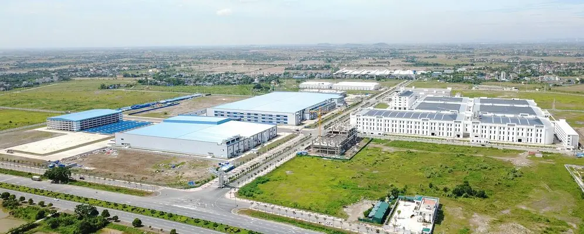

Bài toán
Khu công nghiệp có diện tích rộng, nhiều cổng ra vào và tuyến hàng rào dài. Yêu cầu đặt ra là giám sát liên tục toàn khu, phát hiện sớm xâm nhập ngoài giờ và tập trung hình ảnh về một phòng điều hành.
Giải pháp triển khai
- Camera AI tại cổng và dọc hàng rào, cấu hình vùng cấm theo lịch hoạt động.
- Camera nhận diện phương tiện tại các cổng chính.
- Đầu ghi theo từng khu vực, truyền dẫn cáp quang về phòng điều hành.
- Phần mềm giám sát tập trung, cảnh báo đẩy về bảo vệ trực ca.
Quá trình triển khai
Khảo sát hiện trạng, thiết kế vị trí camera theo sơ đồ khu, thi công theo từng phân khu để không ảnh hưởng hoạt động sản xuất, chạy thử và tinh chỉnh quy tắc cảnh báo trước khi nghiệm thu.
Kết quả
Toàn bộ 150 camera được giám sát tập trung; đội bảo vệ nhận cảnh báo có hình ảnh thay vì theo dõi màn hình liên tục.
Phần đánh giá của khách hàng sẽ được cập nhật khi có xác nhận công bố.